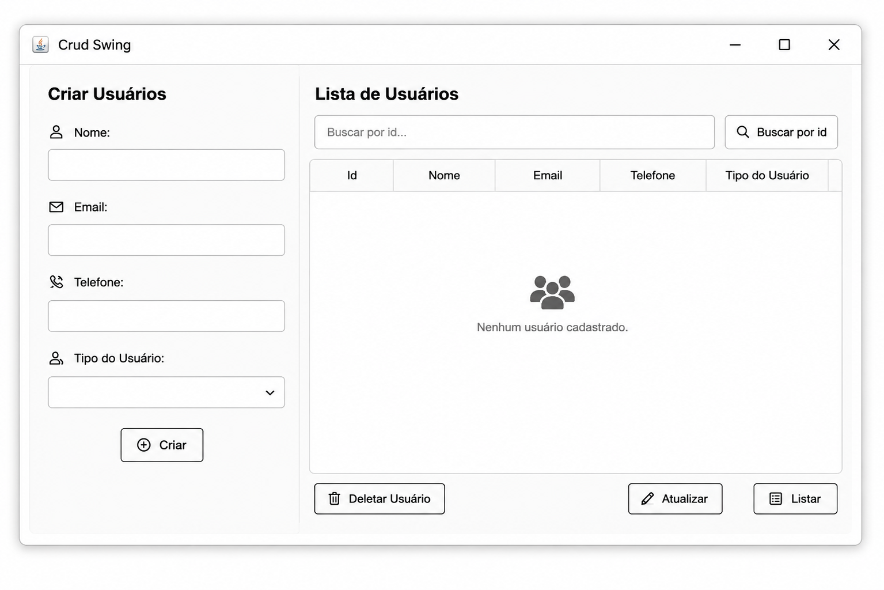
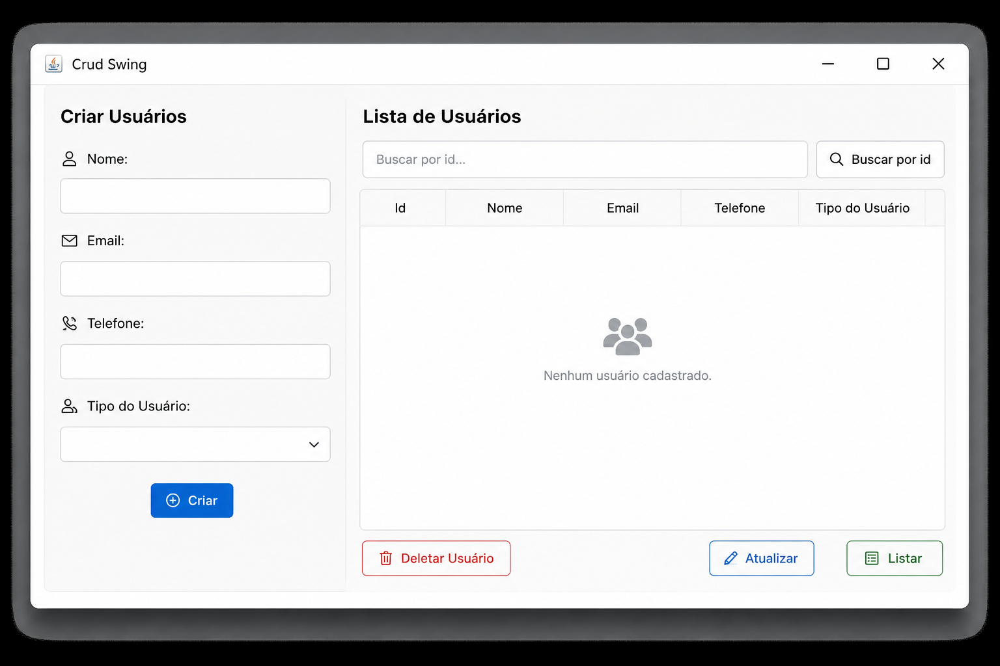
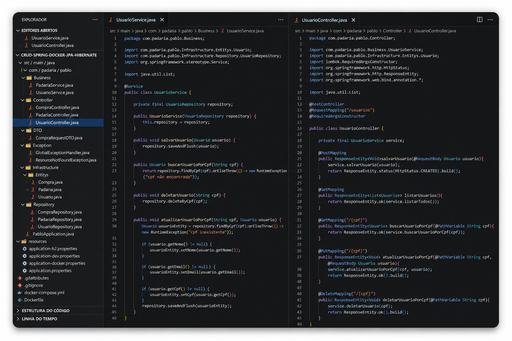

Oracle Cloud Infrastructure 2025 AI Foundations Associate
Oracle • Concluído em Junho de 2025
Certificação focada em Inteligência Artificial, Machine Learning, Deep Learning, IA Generativa e serviços de IA da Oracle Cloud.
Ver credencialFull Stack Developer Jr.
Full Stack Developer Jr.
Criando aplicações modernas, escaláveis e focadas em oferecer a melhor experiência ao usuário.
Conheça meu TrabalhoSou um Desenvolvedor Full Stack Júnior, apaixonado por tecnologia e pela criação de soluções que geram impacto real. Tenho experiência no desenvolvimento de aplicações web utilizando Java, Spring Boot, JavaScript, HTML, CSS e bancos de dados relacionais e não relacionais como MySQL, PostgreSQL e MongoDB.
Possuo conhecimentos em desenvolvimento de APIs REST, versionamento de código com Git, conteinerização com Docker, testes de APIs utilizando Postman e fundamentos de computação em nuvem. Estou sempre buscando aprimorar minhas habilidades técnicas e aprender novas tecnologias para desenvolver aplicações escaláveis, seguras e de qualidade.
Meu objetivo é crescer profissionalmente na área de desenvolvimento de software, contribuindo com dedicação, aprendizado contínuo e trabalho em equipe para a construção de projetos inovadores.
Oracle • Concluído em Junho de 2025
Certificação focada em Inteligência Artificial, Machine Learning, Deep Learning, IA Generativa e serviços de IA da Oracle Cloud.
Ver credencialOracle • Concluído em Maio de 2025
Conhecimentos em gerenciamento de dados, Autonomous Database, Exadata, MySQL, NoSQL, Analytics e migração de dados.
Ver credencialSenac • Em andamento

Este projeto é um sistema CRUD (Create, Read, Update, Delete) desenvolvido em Java, com interface gráfica construída em Swing e conexão com banco de dados MySQL. Ele simula o gerenciamento de usuários com operações completas de cadastro, listagem, atualização e exclusão

Este projeto é uma aplicação CRUD (Create, Read, Update, Delete) desenvolvida em C# com Windows Forms, utilizando MySQL como banco de dados. O objetivo é praticar conceitos de POO, camada DAO, conexão com banco de dados e interfaces gráficas no .NET.

API REST desenvolvida com Spring Boot utilizando JPA e Hibernate para persistência de dados. O projeto permite executar operações CRUD e pode ser executado com PostgreSQL via Docker ou utilizando H2 Database para testes locais.

FocusStudy é uma aplicação completa de gerenciamento de estudos desenvolvida como desafio técnico FullStack. A aplicação permite que usuários, registrem horas de estudo por matéria, acompanhem progresso através de estatísticas e gráficos, mantenham anotações sobre cada sessão de estudo, acessem via Web e Mobile (iOS/Android)
Onitel Telecom
Março de 2026 - Atual
Severiano Pereira Braga - IEL
Junho de 2025 - Janeiro de 2026